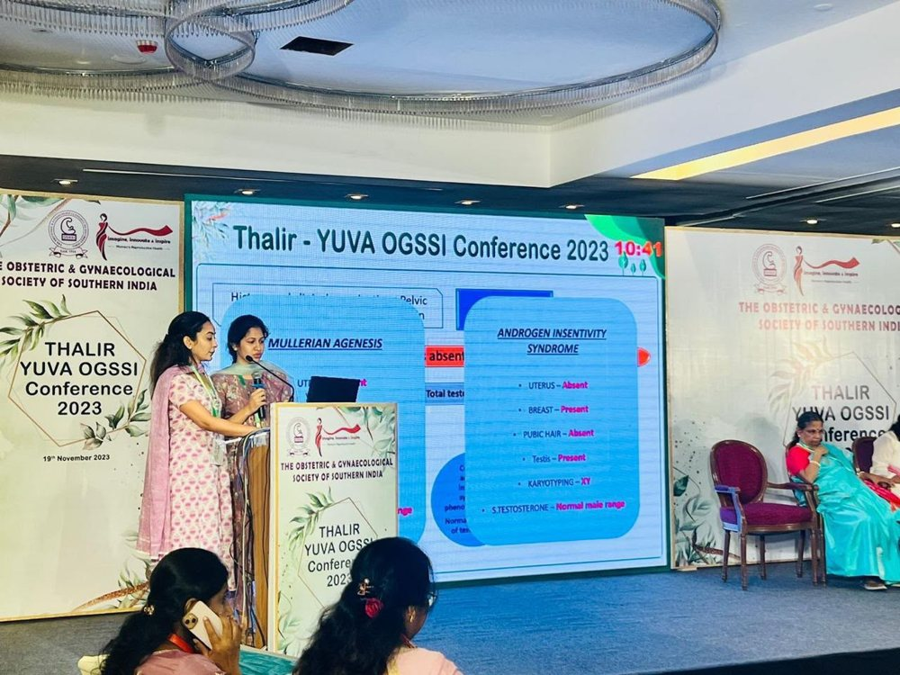
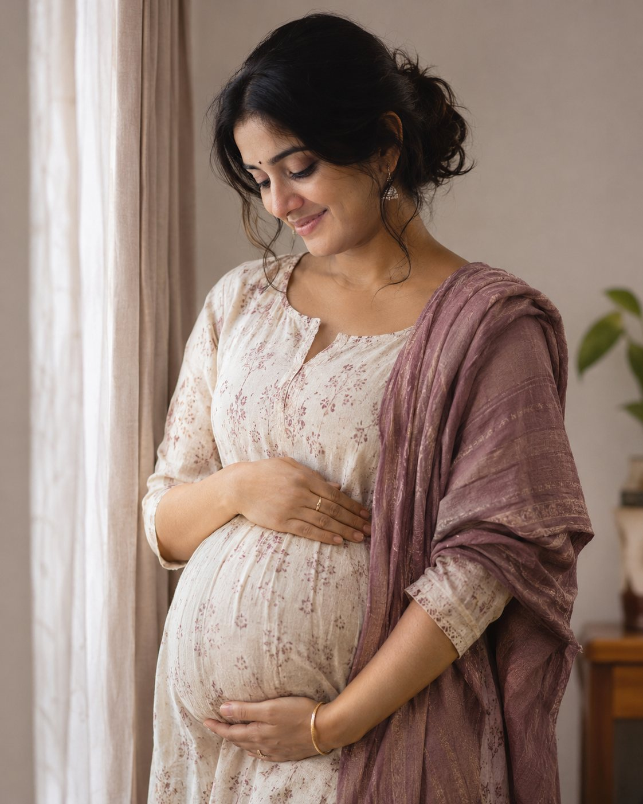
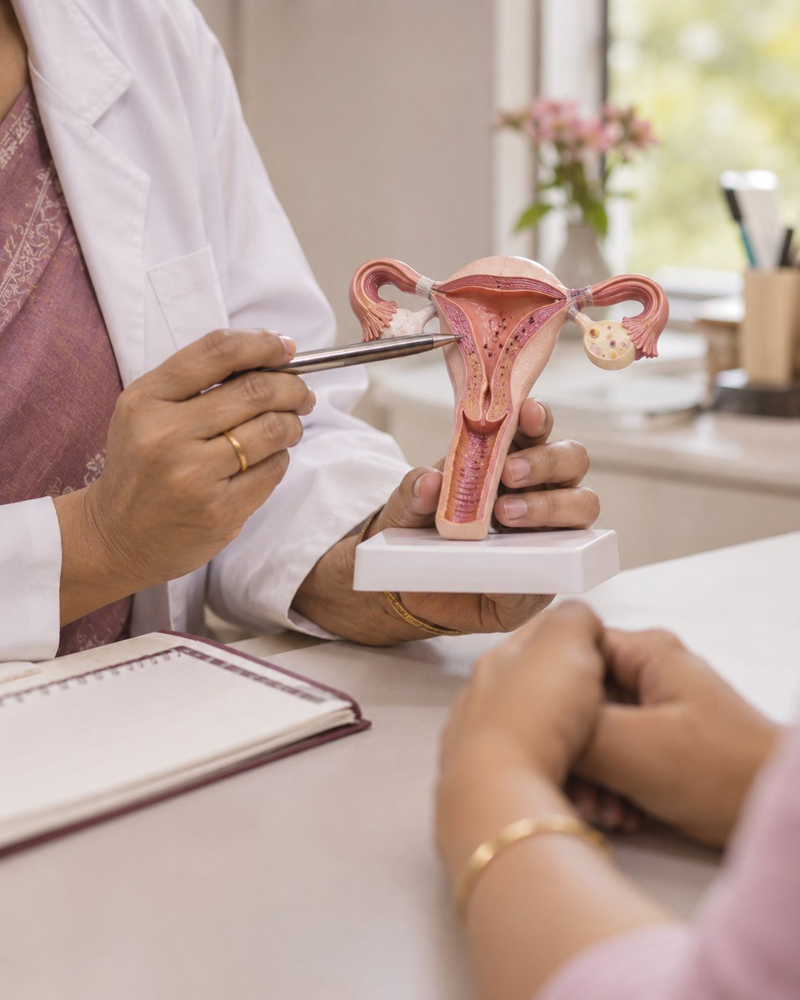
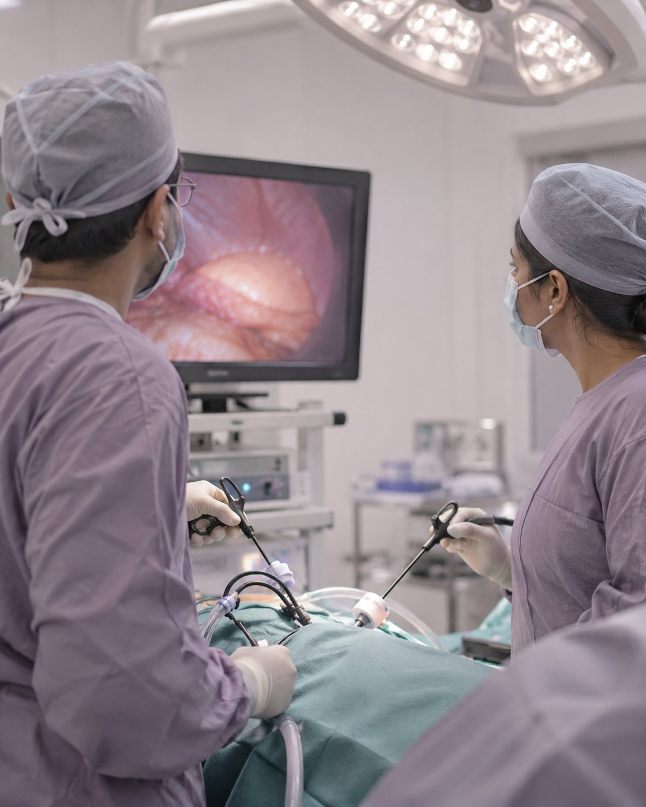
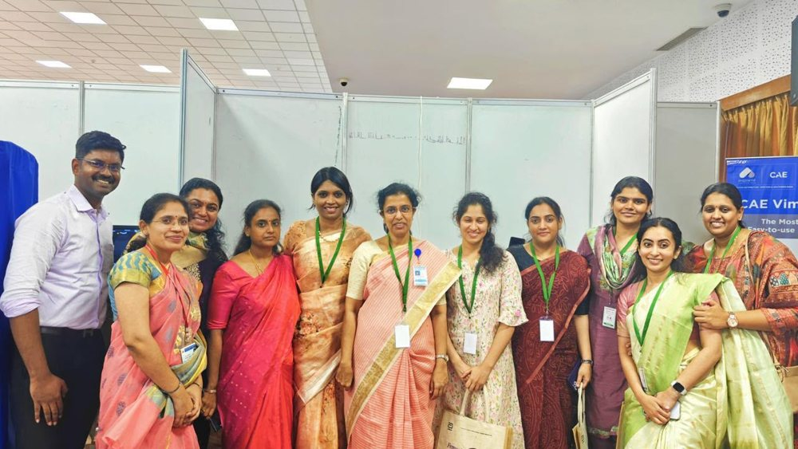
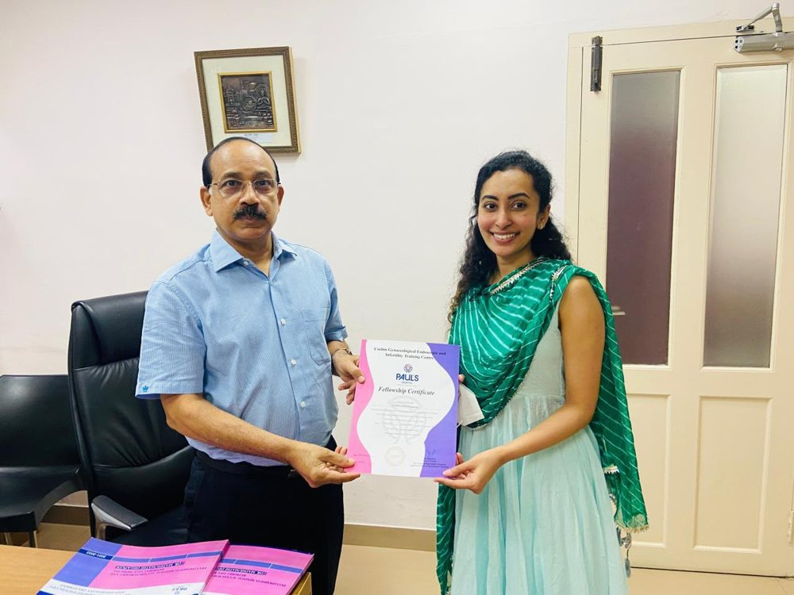

Presentation · 2023
Thalir YUVA OGSSI Conference
Presented research at the Obstetric and Gynaecological Society of Southern India’s young members’ conference.
Gynaecologist and laparoscopic surgeon, Chennai
Dr. Madhumathi Degapudi treats fibroids, endometriosis and other conditions through keyhole surgery, and looks after women’s health from the first pregnancy to well past menopause.
How she can help
A woman’s health questions at 28 are not the ones she has at 48. Choose what brings you in to see how Dr. Madhumathi can help.

Care for the years when periods, contraception, fertility and pregnancy are the questions that matter most.

Most conditions of the uterus and ovaries can now be treated through keyhole incisions, or with no incision at all.
Hot flushes, poor sleep, mood changes and unpredictable cycles are common. They are also treatable.
Services in this stage come from the doctor's note and need her confirmation.
After menopause the risks shift to bones, heart and metabolism. A yearly review keeps you ahead of them.
Services in this stage come from the doctor's note and need her confirmation.
Keyhole surgery
Laparoscopic and hysteroscopic surgery treat the same conditions as open surgery, through much smaller openings. This is Dr. Madhumathi’s main area of training.

The traditional approach.
Incision, drawn to scale
Laparoscopy and hysteroscopy.
Incisions, drawn to the same scale
This is a general comparison. Not every condition can be treated by keyhole surgery, and recovery differs from person to person. Dr. Madhumathi will advise what suits you. Comparison wording to be approved by the doctor.
About the doctor
Treating the problem in front of her, and planning for the woman you will be in twenty years.
Dr. Madhumathi Degapudi is an obstetrician and gynaecologist who specialises in advanced laparoscopic and hysteroscopic surgery at Kauvery Hospital, Chennai.
Her practice does not stop once a problem is treated. She works with women on the long view of their health: hormones, metabolism, bone strength and heart health through perimenopause, menopause and beyond.
In a consultation she explains what is happening, sets out every reasonable option including the non-surgical ones, and leaves the decision with you.
Academic work
Conferences where she has spoken, papers she has published, awards, and the surgical training she continues to take on. Photos and captions are from the doctor. Papers are checked against the journals.

Presentation · 2023
Presented research at the Obstetric and Gynaecological Society of Southern India’s young members’ conference.

Faculty speaker
Invited faculty, sharing clinical updates with practising doctors and trainees in women’s health. Year to confirm
Convocation · 2023
IAGE national endoscopy conference, Le Méridien, Kochi, 17–19 March 2023.

Fellowship
Paul’s Hospital, Centre for Advanced Gynecological Endoscopy and Infertility, Kochi.
Publication · 2022
Med J Obstet Gynecol 10(1): 1156
PG Paul, M Shilotri, AK Chowdary, M Degapudi, G Paul, et al.
Read the paperPublication · 2022
JSAFOG 14(3): 332–333
PG Paul, K Anusha Chowdary, M Shilotri, G Paul, M Degapudi
Read the paperPublication · 2021
IJRCOG 10(9): 3630–3632
PG Paul, A Annal, K Anusha Chowdary, M Shilotri, G Paul, M Degapudi
Read the paperPatient FAQs
General answers. Your own situation may differ, so please ask during your consultation.
Laparoscopic, or keyhole, surgery is done through a few small incisions using a thin camera and fine instruments. Compared with open surgery it usually means smaller scars, less pain afterwards and a quicker return to normal activity.
Often, yes. A myomectomy removes the fibroids and leaves the uterus in place. Whether it suits you depends on the size, number and position of the fibroids and on your plans for pregnancy.
It varies from person to person. Many women go home within a few days and return to light activity over the following weeks. Your surgeon will give you a timeline based on your operation and general health.
Come in if hot flushes, poor sleep, mood changes or irregular periods are affecting your daily life, or if you have any bleeding after menopause. A check-up in your forties is also a good time to plan for bone and heart health.
Book an appointment
Request a time and the clinic will confirm it with you. Bring any scans, reports and the medicines you take. The first visit is for questions, and you leave with every option explained.
| Monday to Saturday | Timings to be confirmed |
|---|---|
| Sunday | By appointment |
Send your details and the clinic will call you to confirm a time. In a hurry? Message on WhatsApp.
From the blog
What a laparoscopic myomectomy involves, who it suits and what recovery usually looks like.
Changes can begin years before periods stop. What to watch for and when to see a doctor.
Medicines come first for many women. When keyhole surgery becomes an option.